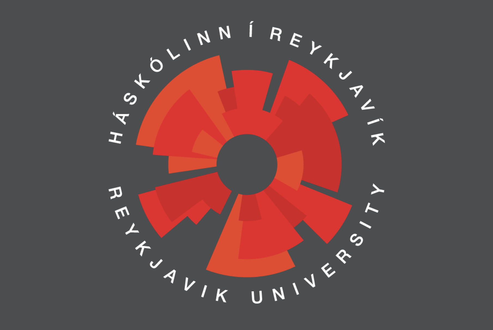

Hi, I'm Snorri Bjarkason, a passionate software engineer who loves working on exciting coding projects. In my free time, I like watching football and exploring new coding challenges!
This section highlights my professional experience across research, software development, and teaching.
I’ve worked on projects ranging from AI-driven sleep diagnostics to large-scale insurance software systems,
as well as supporting university courses in operating systems and programming.
Each role has strengthened my technical skills and ability to solve problems in collaborative environments.
Research Intern at Nox Medical
As a Research Intern in Nox Medical’s Research Team, I contributed to applied industrial research in sleep diagnostics. My work included developing and evaluating AI/ML models—such as CNNs and ResNets—for physiological signal analysis, processing EEG, ECG, and breathing data from sleep studies, and implementing custom statistical analyses. I also supported research publications by preparing figures, results, and technical documentation, and collaborated with scientists and engineers to explore high-impact solutions for diagnostic and treatment innovations.
01
TIA software developer at VÍS
I was responsible for enhancing the TIA insurance platform by creating dynamic output APIs hosted from the database and developing Spring Boot APIs to automate various processes. I focused on preventing users from exploiting the Pay-As-You-Drive car insurance program. Additionally, I retrieved complex data sets using advanced SQL queries to provide valuable insights for team members. I also implemented error prevention mechanisms in batch processes to ensure smooth operations and data integrity. TIA is a modular insurance software solution designed to optimize core processes like policy administration, claims handling, and billing. It supports digital transformation, offering flexibility, automation, and integration with third-party systems to enhance operational efficiency for insurers.
02
Teaching Assistant at RU
As a Teaching Assistant for Operating Systems and Python Programming, I helped students understand concepts such as process scheduling, memory management, and file systems through explanations, examples, and hands-on exercises. I also assisted with Python coursework, guiding students in debugging, writing efficient algorithms, and developing applications. My responsibilities included grading assignments, conducting code reviews, creating supplemental materials, and providing clear, constructive feedback to support learning and problem-solving.
03
Software Developer at VÍS (Internship)
During my internship at VÍS, I contributed to integrating dynamic APIs into internal systems, specifically working on the "Skútan" project. I integrated Samgöngustofan's marine and boat insurance API to enhance VÍS’s internal capabilities, improving efficiency and automation within the insurance platform.
04
What I know
Technical Skills and Tools Expertise
Languages
Python
C/C++
Java
HTML
CSS
JavaScript
SQL
PL/SQL
R
Go
Bash/Shell Scripting
TypeScript
Libraries
NumPy
SciPy
Pandas
Matplotlib
Seaborn
TensorFlow
Keras
Seaborn
Requests
Scikit-learn
Flask
Django
FastAPI
BeautifulSoup
Enterprise Tools
Oracle
PostgreSQL
Docker
Supabase
Git
GitHub
Bitbucket
Jenkins
JIRA
Confluence
AWS
My Projects
Portfolio
A selection of projects I’ve worked on, ranging from distributed systems and machine learning
to backend development and network security.
Raft Consensus Algortihm
Distributed Systems
Flappy Bird Q-Learning
Machine Learning
Fifa Player Classification
Machine Learning
Automated Attack Surface Mapping
Network Security / Website
Careeon Job Search Platform
Website / Backend
Education and Courses
My Education

BSc in Software Engineering - Reykjavík University
A three-year, 180 ECTS program focused on engineering methods for designing and developing software systems, combining theory with practical, industry-linked projects. The internationally accredited degree (ASIIN) covered programming, algorithms, and software architecture, and I chose to use my elective courses for machine learning and network security.
Advanced Learning Algorithms is part of the Machine Learning Specialization by DeepLearning.AI and Stanford Online, taught by Andrew Ng. The course introduces core algorithms such as neural networks, decision trees, random forests, and boosted trees, while teaching best practices to ensure models generalize well to real-world tasks. Through a mix of theory and hands-on assignments, learners build practical skills in supervised learning, performance tuning, and applied machine learning techniques.
The Bug Hunter’s Methodology (TBHM) is an advanced offensive security training program by Jason Haddix, designed for experienced web app testers, red teamers, and bug bounty hunters. The Core course offers a structured, data-driven approach to uncovering real-world vulnerabilities, covering reconnaissance, application analysis, automation, and exploitation techniques. Hosted at Reykjavík University over three days, TBHM emphasizes practical, high-impact tips and tools rather than beginner material.
Supervised Machine Learning: Regression and Classification - Coursera
Supervised Machine Learning: Regression and Classification is the first course in the Machine Learning Specialization by DeepLearning.AI and Stanford Online, taught by Andrew Ng. It introduces core supervised learning techniques, including linear regression for prediction and logistic regression for classification, using Python with NumPy and scikit-learn. Learners gain practical experience in building, training, and evaluating models, while also developing skills in feature engineering, statistical modeling, and predictive analytics.